Chapter 6 covers the setup of security and the applied security components. The chapter delves into the security of a connection, a transformer, and the grid itself. It also briefly addresses some complications that can arise, for example, due to the presence of decentralized production units.
In the event of a short circuit, very large currents occur, which cause significant forces and can damage cables and installations. Additionally, the temperature in cables, transformers, and busbar systems rises very quickly in a short period, causing damage. This damage does not always manifest immediately. Particularly in cables and transformers, incidental temperature increases accumulate in the insulation, which can fail at a later time. Therefore, in principle, every short circuit must be disconnected as quickly as possible. The disconnection must also be selective to inconvenience as few customers as possible. A short disconnection time for large short-circuit currents has the added advantage that the voltage dip, which occurs as a result of a large short-circuit current, is shorter in duration. This results in less disruption for the surrounding customers.
To disconnect a short circuit and to limit the consequences of a short circuit, a protection system is installed. The protection has a threefold purpose:
A protection system limits the potential consequential damage to the infrastructure of an electrical grid in the event of a short circuit. The protection achieves this by sufficiently quickly isolating the disturbed sections or components from the undisturbed grid, thereby minimizing the damage caused by the flowing short-circuit current. The investment costs for the protection must be proportional to the damage that can be prevented and the likelihood of its occurrence.
In the event of a short circuit, preferably only the faulty component should be disconnected. Since it is not economically feasible to protect all components individually, protections will be installed at strategic locations in the network that selectively disconnect a limited part of the network. The principle here is to minimize the number of users who are not directly affected by the fault but are still disconnected. A proper selection of protections, in terms of type and setting, and a proper choice of locations in the networks, is important for the effective operation of the protection system and is a crucial part of the design process of an electrical grid.
In the event of a short circuit, arcs and explosions can occur. Short-circuit currents can also lead to high touch voltages and step voltages. The grounding system reduces the dangerous voltages, but a quick disconnection provides the greatest contribution to personal safety.
The three mentioned protection goals often conflict with each other, so compromises usually have to be made. For example, to limit material damage and ensure personal safety, disconnection must always occur as quickly as possible. However, minimizing inconvenience can be achieved by using sequentially placed protections with increasing time delays. To prevent protections from tripping unnecessarily, the time margins should not be set too narrowly, which means that in some cases, the short-circuit current can flow for a relatively long time. In all choices, however, it is paramount that the protection primarily ensures personal safety; material damage and inconvenience are subordinate to this.
In principle, all components in the distribution system can be affected by a fault, leading to a short circuit. The most notorious are the short circuits in cable connections caused by excavation work or soil movement, or by spontaneous short circuits in connection joints. The current that then flows causes significant mechanical forces and substantial heat development in the other current-carrying components of the network. The magnitude of the short-circuit current depends on the short-circuit capacity of the power source, the distance and thus the impedance to the fault location, and the type of short circuit. More on this in chapter 10.
Overloading can occur if the load is unexpectedly greater than originally anticipated. Thoughtless switching actions in a distribution network can also lead to overloading. The protection system can adequately safeguard the network against these undesirable situations.
Usually, the protection system is only designed to disconnect short-circuit currents. In that case, one must be alert to the gray area between the maximum allowable current of the components in the network and the activation level of the protection. In power transformers, overloads are generally disconnected by a protection system, but this is usually not the case for cables and network transformers.
Selectivity is an important concept for electrical networks in which two or more protection devices are present between the power supply and the fault location. If a short circuit occurs in an electrical network, the section containing the fault must be disconnected as quickly as possible before touch voltages, step voltages, temperatures, or forces that can cause damage occur anywhere in the network. The disconnected section should be as small as possible, and disconnection should occur as close to the fault as possible. This is called selective disconnection. This ensures that the consequences of an overload or short-circuit current are limited to the smallest possible part of the network and that as few customers as possible are affected by an interruption. The type of protection used and the setting of the protection are closely related to the network structure and the desired selectivity.
In the event of a fault, the nearest fuses must interrupt the short-circuit current or circuit breakers must open. A circuit breaker receives a trip command from the protection system for this purpose. However, a protection system can be defective or a circuit breaker can fail. For this reason, a backup protection system is often installed, which non-selectively disconnects the short circuit in case of a failure.
The protection in electrical grids is tailored to their specific function. Grids at different voltage levels differ in structure and specific requirements are set for the reliability of energy supply. For instance, transmission grids usually have a meshed structure and have a single fault reserve without energy interruption, so that in the event of a short circuit, only the faulty component is quickly disconnected. This allows the transmission grid to continue functioning undisturbed. In a distribution grid, in the event of a fault, a preferably small section of the grid is disconnected, and after isolating the fault, the supply is restored. These differences are reflected in the choices for the types and settings of the protection. The following protection systems are applied:
The current can be in the normal operating range, the overload range, or the short-circuit range. Currents below the nominal current rating are in the normal operating range. Almost all faults in the power grid lead to an increase in current and can be caused by an overload or a short circuit. The boundary between the overload range and the short-circuit range is not always clearly defined.
A current protection device measures the current and is capable of detecting a short circuit and clearing it if necessary. A short circuit can occur on a rail, in a cable, in a transformer, or in an electrical machine.
The most commonly applied protection principle is the maximum current-time protection. This protection monitors the maximum allowable current in a cable, transformer, or electrical machine. If an excessive current, which exceeds the maximum allowable current of the object to be protected for a corresponding period, occurs, the protection will shut down. The excessive current can be caused by, among other things:
The most commonly used protection components are the overcurrent protection and the fuse. The overcurrent protection determines, based on the signals it receives from the current and voltage transformers, whether there is a short circuit. If that is the case, it gives (after a possible time delay) a trip command to the circuit breaker, which then interrupts the current. The fuse can be considered a combination of a protection device and a circuit breaker, as it interrupts a short-circuit current on its own based on its characteristics.
In the protection of electrical networks and installations or parts thereof, fuses are frequently used. Advantages include that a fuse is relatively inexpensive, has high availability, is very fast, and is current-limiting. Disadvantages are that the fuse element is defective after disconnection and thus not self-restoring, and it has a limited range of applications. There are significant differences in the technical construction and properties of fuses. These differences pertain to behavior in overload and short-circuit situations and the various application areas with their specific issues.
Fuses are generally very suitable for disconnecting short-circuit currents. Additionally, a fuse must have the following properties:
A fuse always interrupts an excessive current because the conductive parts melt when carrying the excessive current. If the fuse carries a current that is just large enough to initiate the melting process, it may happen that the current is not interrupted or is interrupted only after a long time. This uncertain area is called the critical area of the fuse. There are different types of fuses on the market, which are distinguished by the size of the critical area (Wright, 2004). In order of decreasing critical area: Back-Up, General Purpose, and Full Range fuses.
For a General Purpose fuse, the minimum interrupting current is 1.5 times the nominal current, and for a Back Up fuse, the value is 2.5 to 3 times the nominal current. With a Full Range fuse, the critical area is very limited, and it blows both during overloads and short circuits. The Back Up and General Purpose fuses have a larger critical area and work especially well during short circuits. The MS fuses are Full Range cartridges. Figure 6.1 illustrates the characteristics of a series of fuses for use in MS networks.

In medium voltage networks, fuses are most commonly used as short-circuit protection for distribution transformers and sometimes for protecting feeders in the 10 kV network. This is more economically attractive than using circuit breakers. Additionally, fuses require less space. When selecting the appropriate fuse, one must consider the inrush current that occurs when energizing an unloaded transformer. In practice, the value of the fuse is typically chosen to be 1.5 to 2.5 times the nominal value of the transformer current.
For motors, the fuses are often heavily loaded by the inrush currents. An undesired disconnection during startup can be the result. This can be prevented by choosing a fuse with a melting current greater than the inrush current. Additionally, the factors of startup time and the number of switch-ons per unit of time are important.
In a floating network, in the event of a ground fault, a ground fault current will flow, the magnitude of which is determined by the network's capacity. Together with the load current, the current through the fuse can then reach a value that lies between the minimum melting current and the minimum breaking current. Currents between these two values fall within the range where disconnection is uncertain if General Purpose and Back-up fuses are used. If this situation is likely to occur, then Full Range fuses must be applied, or another solution must be sought, such as a circuit breaker.
Some types of fuses have a disconnection or indicator mechanism. After the fuse blows, a striker pin is ejected. The movement of this striker pin can be used for signaling or for disconnecting a three-phase load switch or circuit breaker. This ensures that in the uncertain area, where not all fuses will blow, a three-phase disconnection still occurs.
In the area between the nominal and the minimum melting current value, the currents can be difficult to extinguish by a fuse. This results in significant heat development with the associated risk that too much heat will build up in the fuse. This creates the possibility of the fuse exploding or the risk of self-ignition of the installation in which the fuse is incorporated. This occasionally happens in practice.
With the exception of the Full-range fuses, MS fuses are generally less suitable for overload protection and better suited for short-circuit protection.
A problem with fuses is the heat development. At power levels higher than 630 kVA (36 A at 10 kV), the MS fuse links heat up too much. The heat increases quadratically with the current (I).2As a result, the holders of the installation in a substation, for example a Magnefix, can become thermally overloaded. Therefore, when the power of the connection exceeds 630 kVA, it is preferable to use a circuit breaker and protection relay. There is also the option to choose heavier MS fuse links. However, this creates problems with selectivity with the protections in the low-voltage branches. Therefore, for power levels greater than 630 kVA, protections with circuit breakers are chosen to maintain the intended selectivity.
In a fuse, the short-circuit current can be interrupted within a very short time. The duration depends on the energy required to melt the fuse element during a short circuit. Due to the construction of the fuse element, the current is limited to a value lower than the expected peak value (prospective short-circuit current). After that, the current will quickly decrease to zero. The maximum value of the current that passes through is called the let-through current. The let-through current curve shows the relationship between the magnitude of the let-through current and the magnitude of the prospective short-circuit current through the fuse. The prospective short-circuit current is the value of the current that would flow in the event of a short circuit if no protective component were included in the circuit. Figure 6.2 illustrates this.

At time t0the short circuit occurs. If no protective component were installed, the full prospective short-circuit current would flow (dotted line). When a fuse is used, the following happens.
The general term for a protection device that, based on a measurement, gives a trip command to a circuit breaker is a protection relay or, simply, a relay. A relay is used in situations where the protection needs to respond to variables other than just the current flowing for a certain duration or when a different interruption characteristic than that of a fuse is required. Depending on the variable that needs to be measured, various types of protection relays are available. A protection relay is composed of three basic elements.
Figure 6.3 provides a schematic overview of the basic structure of a protection relay. The measuring element converts the primary measured quantity into a type of signal and a signal value, which can be compared in the comparison element of the protection circuit. In the comparison element, the measured values are compared with the set values.
If one value, or a combination of set values, is exceeded for a time interval longer than a set duration, a shutdown command is issued by the decision element.

There are various versions of a relay. Protective relays are classified into two main types, independent of their measuring function.
Electromechanical relays are usually robustly constructed. They contain several components such as armatures, Ferraris disks, small synchronous motors, or moving coil relays that move under the influence of magnetic fields. Electromechanical relays are still the most common protective devices in networks. Due to rapid developments in electronics, static relays (see further on) are used for replacements. The relays are used in the primary and secondary circuits.
The primary protection relay is a relay that performs simple protection tasks, such as monitoring the maximum current/time, possibly combined with a thermal function. The relay is integrated into the primary circuit at the circuit breaker. The energy for the relay's operation is drawn directly from the network.
A frequently used relay is the secondary protection relay. This relay is most often connected to measuring transformers (current and/or voltage transformers). These measuring transformers reduce high voltages and large currents to standard values, which can be used as input signals for various protection systems. The measuring transformers also provide a separation between the primary high-voltage installation and the secondary protection circuits operating at low voltage levels. The secondary relay requires auxiliary power for its operation.
These relays have been used since 1960. The term 'static' implies that these relays have no moving parts that determine the relay characteristic. This task is entirely performed by electronics. The measured quantities are converted into a signal of such type and magnitude that they can be processed by the electronic part of the relay. Two types are distinguished here.
In this relay, the quantities of current and/or voltage are converted into an analog signal and then (usually) rectified. The signal thus obtained is processed by an electronic circuit and then supplied to the comparison unit or detection circuit, after which it provides a shutdown command if necessary. This type of relay requires auxiliary power from the grid.
The microprocessor relay differs from other relays in that the input data, such as current and voltage, are converted into digital quantities. The processor then calculates whether there is an exceedance of the maximum or minimum threshold value, after which a shutdown command may follow if necessary. Due to the flexibility and high computational power of modern processors, of which several are incorporated into a relay, a large number of functions can be combined in a single relay.
In practice, new electromechanical relays are no longer used. Instead, electronic relays have taken their place. In new construction or renovation projects, microprocessor-controlled protections are applied. Reliability, energy consumption, and operating speed are comparable to those of electronic relays, but the possibilities for additional applications and calculations, made possible by digitally available data, are greater. For example, protection characteristics can be adjusted, and this digital data can be read out after an event.
Protection relays receive their information from measurement transformers. These transformers convert the high voltages and large currents into values that the relays can process. They also provide isolation between the high-voltage network and the secondary installation.
Measuring transformers must meet specific requirements, for example regarding the insulation level, the degree of saturation when measuring short-circuit currents, and the accuracy of the measurements. The accuracy requirements are generally high.
Current transformers for protection can be identified by the designation 'P' (protection), for example, 5P20. This means that the accuracy is 5% at an overcurrent factor of 20. The overcurrent factor is the ratio of the primary short-circuit current to the primary nominal current of the current transformer. The accuracy is only achieved if the current transformer is loaded by the relay or another protection device with the nominal power for which it is designed.
The load of a current transformer is formed by the protection device and the loss in the measuring leads. Typically, the nominal power of a current transformer is 15 to 20 VA. If the load is lower than nominal, the overcurrent factor increases. This is usually the case with static relays. Compared to electromechanical relays, these have a relatively low self-consumption. An example of the designation of a current transformer is 5P20, 30 VA, 2500/5A, which means:
A current transformer with no load connected must be short-circuited to prevent damage. The secondary winding must not be open. If the secondary winding is open, there is no compensation for the flux in the transformer core, causing the core to become highly saturated, which can result in it burning out.

The operating principle of the voltage transformer is based on that of a regular power transformer with two windings. The high primary voltage is transformed into a secondary voltage of 100 V or 100/√3 V.
The special feature of voltage transformers for protection functions is that they are required to exhibit an acceptable small transfer error even at very low voltages. This is necessary because, in the event of short circuits, the voltage in the network can drop to very low values. Voltage transformers for protection functions are designated with classes 3P and 6P. This means that the transfer error at 5% of the nominal voltage and at the highest voltage that can occur in the electrical network (up to1.9 · Unom) must not exceed 3% and 6%, respectively.
The most commonly used protection system is the maximum current-time protection (MST). This protects the electrical network against the consequences of excessively high current through the circuit. In this protection system, a distinction is made between:
This method of protection is simple, reliable, and inexpensive. The MST is part of the trio: current transformer – relay – circuit breaker. The current from the primary circuit is converted by the current transformer to the lower current level of the relay. Subsequently, the current is assessed by the relay. If the measured current is higher than a set value, the relay will command the circuit breaker to shut off.
The MST can also be used as a backup protection for failing downstream circuit breakers and protections. No communication is required for its operation.
Besides these advantages, there are also disadvantages. The MST is only applicable in radial networks, where the current flows in one direction from the substation to the ends of the network. Furthermore, due to the time grading required to achieve selectivity in radial networks, the disconnection times increase as the feeder is closer to the substation.
The independent maximum current-time protection issues a trip command to a circuit breaker of the feeder when the input signal of the relay exceeds the set value (the measured value is greater than the set value) and the duration of the exceedance is longer than the time set on the protection relay.
If the input signal drops below the set threshold before the set time has elapsed, the relay returns to its normal position and no trip command follows. However, the relay does indicate that it has been activated.
The trip time is independent of the magnitude of the current. Most independent maximum current-time relays have the capability to set one or more current thresholds with corresponding trip times. Often, the relays also have a setting option for a current threshold value that leads to immediate tripping. The trip time is then equal to the response time of the relay (approximately 30 ms) and that of the circuit breaker (40 to 80 ms). The purpose of this is to limit damage in the event of large short-circuit currents.
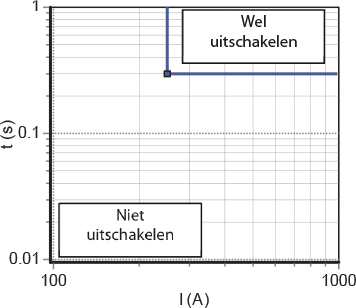Figure 6.6 shows the characteristic of the independent maximum current time relay, where the set current value is 250 A and the trip time is 0.3 s.
With this type of protection, the trip time depends on the current: the higher the current, the faster the disconnection. Fuses also have this characteristic. The major advantage of protection with an AMT relay is that the quick disconnection at high currents provides better protection for the installation against large short-circuit currents. Achieving selectivity between consecutively connected protection devices is more difficult than with an OMT relay. At low short-circuit currents, the load current (the pre-load) can affect the operation.
The tripping characteristic makes this relay very suitable for protecting motors, transformers, and cables. Figure 6.7 illustrates the characteristic of a dependent maximum current-time relay, in which the set current value (I>) is equal to 250 A.
Both the OMT and AMT relays can also be equipped with a limit, indicated by I>>. This limit ensures that above a certain current value, the relay issues a trip command faster than it would based on the characteristic curve. Figure 6.8 illustrates this for a value of I>> equal to 1000 A and t>> equal to 0.3 s. In fact, this is a combination of a dependent and an independent relay.
 Figure 6.7 Tripping characteristic of an AMT relay
Figure 6.7 Tripping characteristic of an AMT relay Figure 6.8 Tripping characteristic of a restricted AMT relay
Figure 6.8 Tripping characteristic of a restricted AMT relayIf multiple protections are applied sequentially in a radial-operated network, the step time of the protections must increase from the end of the network towards the power source due to the desired selectivity. The setting times of two consecutive relays must be such that the relay closest to the fault gives the trip command first. If the circuit breaker activated by the relay fails, a preceding protection will activate the preceding circuit breaker slightly later in time. This second circuit breaker with protection then functions as a backup for the failing breaker. This applies not only to two consecutive relays at the same voltage level but also to two protections on either side of a transformer. For example, the relay on the primary side of a distribution transformer must be selective with the fuse on the secondary side.
When staggering the time settings, the switching time of the circuit breaker, which is approximately 40 to 80 ms, must be taken into account. Considering various uncertainties in the protection circuit, such as variations in trip times, a margin of 0.3 to 0.5 seconds is maintained when staggering the time in circuits with electromechanical relays. A smaller margin could be maintained for static relays. Figure 6.9 illustrates the time staggering of two relays. Here, 'AMT relay 2' is placed closer to the power source than 'AMT relay', which is reflected in the fact that both the current and time settings of 'AMT relay 2' are greater than those of 'AMT relay'. Additionally, it can be seen that the time staggering is greatest for low current values. For selectivity, it is important that the margin for all trip times in the characteristic is met and that the characteristics do not intersect.
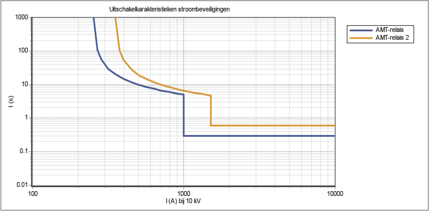When setting up the protections, a wide range of options can be chosen from. For time coordination, a standard characteristic must first be selected. In the international standards, IEC 60255 defines several standard characteristics. These characteristics are listed in Table 6.1.
Normkarakteristiek |
Standard inverse (SI) |
Very inverse (VI) |
Extremely inverse (EI) |
Functie |
 |
 |
Here, Ikthe occurring short-circuit current and I> the set current value. The three standard characteristics are typified by the steepness of their slopes: standard inverse (least steep), very inverse (steeper), and extremely inverse (steepest). These characteristics are fixed properties of old electromechanical relays but can also be set in modern static relays. For the inverse characteristic, the pick-up point must first be set. This is the value of the current above which the timer starts running. After this, the disconnection time can be set if deviating from the standard characteristics. Figure 6.10 illustrates the three standard characteristics.

In most cases, a relay with a standard inverse characteristic is sufficient. However, if adequate selectivity cannot be achieved, a very inverse or extremely inverse characteristic may be chosen. Very inverse relays are particularly suitable for situations where the short-circuit current decreases rapidly with increasing distance from the source. This occurs when there is a substantial increase in impedance with increasing distance.
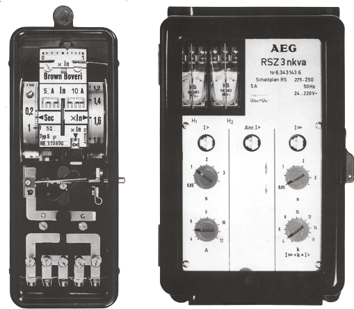In addition to the standard MST, there is a type where the voltage is also measured. This allows the direction of the current to be determined. This is called a power direction (ER) protection. In the medium voltage network, it is no longer a given that the customer is a pure load. Due to decentralized generation (DCO), currents increasingly flow in directions other than the usual, from the source to the consumer. Also, in the case of parallel circuits, it is important to issue a trip command based on the direction of the current.
In principle, the directional power protection consists of a combination of a maximum current-time relay and a directional relay. The MST can be independent or dependent. This relay determines whether the current exceeds the set value and determines the moment when a possible shutdown occurs. The directional relay determines the direction of the current based on the current and the voltage. If the current vector is in the forward direction, the directional relay passes the shutdown command from the MST. If the current is backward, the directional relay prevents the shutdown command.
In figure 6.12, the voltage vectors areVa, VbenVcof the three phases are shown, as well as the current vectorIaof phaseaThere are many conceivable ways to measure currents and voltages. In a relay, the '90° Quadrature Connection' is the standard connection method. In this method, for phase protectionathe phase currentIaand the associated voltageVbcused. In this way, a sufficiently large voltage vector is available, even if the voltage drops in thea-phase drops to zero during a short circuit. Subsequently, the coupled voltageVbcrotated by an angle that is the characteristic angleRCA(Relay Characteristic Angle). The measured and rotated voltage vector is referred to asV'bcFigure 6.12 illustrates this for aRCAvan45°. In this way, the maximum sensitivity of the relay is achieved if the current has an angle of45°(= 90° – RCA)lags behind the phase voltage.

The maximum sensitivity of the relay is achieved when the measured current has the same angle as the voltage vector.V'bc. This is the case in figure 6.12 when the current vectorIaat an angle of90° – RCA, in this case 45°, lags behind the phase voltageVaof phasea. The lowest sensitivity is achieved when the current vectorIaleads the phase voltage by 45°Vaof phase a lags by 135°. In that case, the current vector is perpendicular to the voltage vectorV'bc. The line that makes an angle of 90° with the voltage vectorV'bcis called the 'zero torque line'.
In a forward-directed directional relay, disconnection occurs if the current vector is located in the gray area of figure 6.12, meaning when the current leads the voltage by a maximum of 45° or lags by a maximum of 135°. In modern relays, the characteristic angle RCA can be set, which also allows the zero torque line to be adjusted. Essentially, this amounts to a cos(φ) correction for the direction to be protected.
Current and time grading only functions well if the current through a network section always flows in the same direction. If this is not the case, maximum current-time relays can still be applied by using directional relays. Maximum current-time directional relays are usually applied with parallel cables. A short circuit in one of the parallel cables is fed from the supply side as well as from the parallel cable. It is not possible to selectively protect this situation with non-directional MST protections.
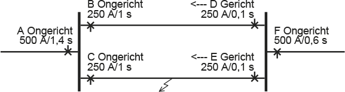Figure 6.13 provides an example of the application of directional relays. A section of a network with two parallel circuits is fed from A. On the supply side of the two parallel circuits, non-directional OMT relays (B and C) are applied, which will issue a trip command after 1 second if the current exceeds 250 A. On the other side of the two parallel circuits, directional relays (D and E) are applied, which will issue a trip command after 0.1 seconds if the current exceeds 250 A. In the event of a short circuit in cable C-E, the short circuit will be fed through both parallel circuits, and the protections in A, B, C, and E will respond. The protection in E will issue a trip command after 0.1 seconds, after which the short circuit will no longer be fed through B. Consequently, protection B will not issue a trip command. The short circuit will still be fed through C. The protection in C will issue a trip command after 1 second. This situation is selectively protected, thanks to the directional relays.
Modern static relays are equipped with many logical inputs and outputs. Using a communication link that connects two relays on either side of a protected object, such as a cable connection, the protection actions (often disconnection) can be influenced.
One of the applications is blocking the relay. A protection device that detects a short circuit outside its protected zone can send a blocking signal to the protection device on the other side of the object to be protected. Figure 6.14 illustrates that Protection 1 sends a blocking signal to Protection 2 if the short circuit is located in the reverse direction of Protection 1.

Another application is accelerating the disconnection by another relay. If in figure 6.15 Protection 1 detects a short circuit in the forward direction, it will respond and issue a disconnection command. In a meshed network structure, this fault must also be disconnected by Protection 2. If Protection 1 sends an acceleration signal to Protection 2, the fault is quickly isolated. In distance protection, this scheme for shortening the disconnection times of a subsequent zone is also called carry-over switching.
The operation of differential protection is based on the fact that the sum of the currents flowing into an object in an undisturbed situation is always equal to zero. A short circuit in the object causes this sum of currents to no longer be equal to zero. In an object with one incoming current circuit and one outgoing current circuit, the current flowing in has a different value than the current flowing out. By comparing the currents at the input and the output, a short circuit can be detected. When both ends are located close to each other, this is easy to achieve, but when protecting a cable, communication must be ensured. Differential protection is applied to transformers, lines, cables, and rail systems.
Figures 6.16 and 6.17 illustrate the principle of differential protection. The differential protection sums the currents from all measuring points. If the measurement error due to the current transformers is disregarded, the sum of the currents in a healthy situation is equal to zero. In a fault situation, the sum of the currents is no longer equal to zero, and a trip is initiated. A large measurement error due to the current transformers can have the same effect. Therefore, the current transformers at the different measuring points must have as similar properties as possible for current transfer. The advantage of differential protection is that the trip time in the protected zone is almost independent of the location and type of fault. The trip time is equal to the inherent time of the protection and the circuit breaker, approximately 40 to 80 ms.
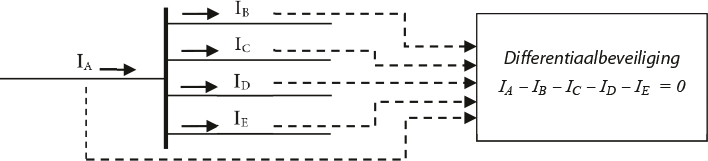Figure 6.16 shows the protection of a busbar system. The current values from all incoming and outgoing cable connections of a busbar, originating from the current transformers, are connected to the differential protection. In the differential protection, the vector sum of these values is determined. If the definition of the current direction is consistently followed (incoming positive and outgoing negative), the sum of the currents will be zero in a normal undisturbed situation. The protection will then not trip.
In the event of a short circuit on the rail, a short-circuit currentIFflow. The vector sum of the currents through the cable connections is then no longer equal to zero, but equal to the short-circuit current. The differential protection will then issue a trip command without any time delay.

If the object to be protected is a cable connection, communication between both sides must be ensured. This will nowadays be realized with a fiber optic connection. When protecting a transformer, the current transformers must be selected in such a way that they correct the transformation ratio. After all, when summing the currents from the primary and secondary circuits, they must be referenced to the same voltage level. The transformer’s connection method (star-delta) must also be taken into account.
The differential protection secures a fixed delineated area, which is called the protected zone. In principle, this results in high selectivity for the differential protection. When setting up the protection, there is no need to consider other protections.
Differential protection is also used to secure parallel cable connections as an alternative to protection with directional relays.
By means of the 'dual slope' bias technique (see figure 6.18), the differential protection has been made less sensitive to through faults and measurement errors (such as saturation) of the current transformers. The sensitivity of the protection depends on a bias current. For small currents, the bias is small. As the current increases, the bias becomes larger. Figure 6.18 illustrates this.
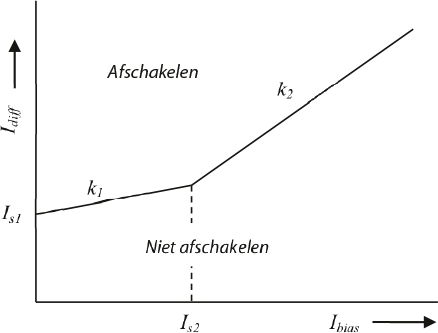The sum of the measured currents isIdiffThe protection issues a trip command if this value is greater than the corresponding value of the bias characteristic. The measurement ofncurrents is given by the absolute value of the vector sum of the currents (all directed towards the object to be protected):
[ |
6.1 |
] |
The corresponding bias is given by the sum of the absolute values of the currents, divided by the number of measurements:
 |
[ |
6.2 |
] |
The shutdown command is given if:
VoorIbias< Is2: 
VoorIbias≥ Is2: 
To be insensitive to the charging current of the circuit, the setting ofIs1at least equal to 2.5 times the static charging current of the circuit. Another possibility is that the differential protection itself filters out the charging current from the measured current value. The differential protection must then have an input for a voltage transformer. Additionally, the capacity of the circuit must be known. The manufacturer often provides a recommendation for the other three settings in the protection manual. Typical values for a longitudinal differential protection (for a connection) are:
Is2= 2 pu(per unit; see chapter 7)
k1= 0.3
k2= 1.5

Distance protection is primarily used for protecting high-voltage lines and cable connections. Its operation is based on determining the impedance of the connection using the measured voltages and currents. The impedance from the measuring point to a point on the connection increases directly proportionally with the distance from the measuring point. A short circuit is detected due to the drastic reduction in impedance in the direction of the short circuit. If the measured impedance is much smaller than the normal impedance, a fault is present. The protection is activated when a preset operating current is exceeded or when a preset operating impedance is undershot. The impedance is calculated from the quotient of the measured voltage and the measured current. Therefore, the protection is inherently directional. The distance from the measuring point to the fault location is determined as follows:
[ |
6.3 |
] |
in which:
ZX= Ugemeten/ Igemeten
Zkabel : the impedance value of the cable or line, set on the protection device
The disconnection by a distance protection device occurs in steps, called zones. The first zone, the fast zone, gives an immediate trip command if the measured impedanceZXis less than the first set impedance, which is equal to 85 to 90% of the first section to be protected. This section is usually the length of the cable or line connection to be protected (see figure 6.20). A safety margin of 10 to 15% is maintained due to the possibility that the short circuit still has some impedance or due to inaccuracies of measuring transformers and available data on the impedance of the connection. For this reason, the value ofZ1usually corresponds to 85 to 90% of the total impedance of the first section to be protected. Faults between 85 to 90% and 100% of the section will be disconnected by the second stage with some time delay.
The second stage is set to a value that again amounts to 85 to 90% of the impedance of the next section. In this way, the second stage serves as a backup for the first stage of the next protection. If a fault in the second connection is not disconnected by the corresponding protection, the preceding protection will issue the disconnection command with a time delay. Figure 6.20 illustrates this for three connections with impedances.Z1,Z2enZ3, which are protected by three distance protections. Herein, the disconnection timest1up to and includingt4the disconnection times from the first to the fourth stage.

In medium voltage networks, the number of applied stages is often limited to 2. Thus, it is common toZ2to be set at 115%, which is 100% of the circuit to be protected plus 15% of the downstream connection.
There is a final stage, which is set in a distance protection system to disconnect high-resistance faults. The corresponding final time is a longer disconnection time than all other protections. The final stage essentially serves as an emergency brake.
The distance protection responds to faults on both sides of the station. It is also possible to set a reverse step as a backup for faults in the preceding connections.
The measurement and calculation of impedance by the protection system must be done accurately. The basis is the measurement of voltages and currents. There are many possibilities for measuring these quantities. The choice of method depends on the phase angle between current and voltage. In a static relay, the phase shifts are realized using software, but in electromechanical relays, the phase shifts are achieved through the connection options on the relay (see also the characteristic angle of a relay in figure 6.12). A commonly used method utilizes the voltage in the healthy phases and the current in the involved phase. The measurement methods for the four most common short circuits are explained below. The explanation uses vectors that describe voltages and currents. This means that both the magnitude (length) and the angle of the vectors are considered. When applying the formulas, complex calculations are used.
In the case of a three-phase short circuit, it does not matter if there is contact with the ground. The voltage at the short circuit point is zero volts. The distance protection sees the three phase voltages, the three line-to-line voltages, and the three phase currents at the measuring point.
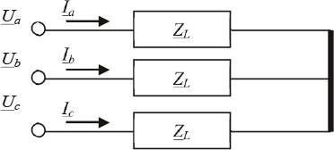For the coupled voltage across phasesbencapplies:
 |
[ |
6.4 |
] |
From this follows for the measured impedance:
 |
[ |
6.5 |
] |
In the case of a two-phase short circuit, it does matter whether there is contact with the ground. In the event of a two-phase short circuit without ground contact, the coupled voltage across and the currents in the involved phases are considered. Below, the short circuit between phasesbencexplained.
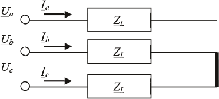For the coupled voltage across phasesbencapplies:
[ |
6.6 |
] |
From this follows for the measured impedance:
[ |
6.7 |
] |
In the event of a short circuit with ground contact, the phase voltage at the fault location is equal to zero volts. It is tempting to assume that the voltage drop from the measurement location to the fault location could simply be determined by the product of phase impedance and phase current. However, the current in the entire short-circuited circuit is also determined by the return impedance, which in turn depends on the number of ground electrodes, the grounding method, and the ground impedances. If these factors are not sufficiently taken into account, the impedance measurement will not be accurate.
The voltage drop from the measurement point to the fault location is the sum of the voltage drops in the component networks from the measurement point to the fault location. For further information on symmetrical components and this ground fault, refer to Chapter 7 and Chapter 10, Tables 10.3 (types of short circuits) and 10.4 (component networks for types of short circuits) and the accompanying explanations. According to the method of symmetrical components, the voltage drop and the current in the short-circuited circuit are given by:
[ |
6.8 |
] |
 |
[ |
6.9 |
] |
The return current at the measuring point is given by:
[ |
6.10 |
] |
Herein areIa,IbenIcthe measured phase currents andI1,I2 enI0the currents in the component networks. A relationship is sought between the voltage at the measuring point and the phase currents, as well as the ratio between the homopolar and normal impedance of the connection. Therefore, a complex factorKintroduced, which represents the ratio betweenZL,0enZL,1records.
 |
[ |
6.11 |
] |
Filling in the equations forKand forIain the voltage equation yields:
[ |
6.12 |
] |
Finally, substitute the equation for the return currentInin this voltage equation yields:
 |
[ |
6.13 |
] |
In security technology, the factor is also usedKNused:
[ |
6.14 |
] |
Since the homopolar impedanceZL,0is equal toZL,1+ 3ZE, simplifies the equation for the factorKNin:
[ |
6.15 |
] |
Herein isZEthe ground or return impedance. A distance relay measures the correct impedance through a complex factorKNof the return currentInto add to the phase currentIa. This method is called 'Residual Compensation' (NPAG, 2002).
In the case of a two-phase short circuit with ground contact, the voltage drop and the currents in the involved phases are considered. The return current isKN-factor taken into account. Below, the short circuit between phasesbencand ground explained.
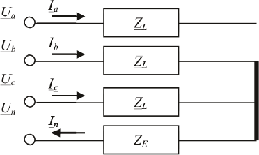For the phase voltage over phasebapplies:
[ |
6.16 |
] |
From this follows for the measured impedance:
 |
[ |
6.17 |
] |
In the case of a single-phase short circuit with ground contact, the voltage drop and the current in the affected phase are considered. The return current is calculated with theKN-factor taken into account. Below, the short circuit between phasecand earth is explained.
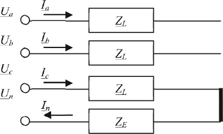For the phase voltage over phasecapplies:
 |
[ |
6.18 |
] |
From this follows for the measured impedance:
 |
[ |
6.19 |
] |
A tripping characteristic, also known as a relay characteristic, describes for each stage of the distance protection at which value of R and X the relay should issue a tripping command. Numerical relays measure the absolute fault impedance and determine based on the relay characteristic whether they should issue a tripping command. Traditional distance relays do this slightly differently: they compare the measured voltage with a calculated voltage, which is derived from the measured current and the impedance for the respective zone. The relay characteristics are constructed with circles and straight lines in an R/X plane. Thus, the following distinctions are made:
Many techniques are applied in protection technology. One of the simplest techniques does not distinguish the angle of the measured impedance. The characteristic in the R/X diagram is a circle with its center at the origin. The radius of the circle is the zone setting in Ohms. The relay is not directional and will issue a trip command for all impedances calculated from the measured voltages and currents that fall within the circle; thus, on both sides of the node where the relay is installed. This is usually insufficient and therefore undesirable, so a directional element, as described in the directional relay (section 6.1.6), is incorporated. In this way, the circle characteristic changes to a half-circle. Figure 6.25 illustrates this for a relay with three stages. Each stage is set with an impedance and a corresponding trip time. The gray area indicates the plane within which a trip command may be given. If the measured impedance is less thanZ1, then at the timet1a trip command is given. If the value of the measured impedance lies betweenZ1enZ2, then at the timet2a trip command is given.

A special form of a circular relay characteristic is that of the Mho relay. The characteristic in the R/X plane is a circle where the circumference, not the center, passes through the origin. This incorporates a reasonable form of directional sensitivity. These relays have been widely used in the past.
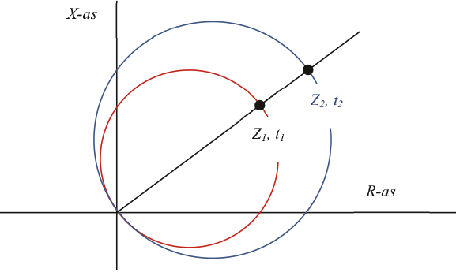
Modern microprocessor relays can be set for circular and Mho characteristics, allowing them to simulate the operation of traditional relays. With these relays, it is also possible to set the characteristic according to a polygon. The polygon is described with straight lines that intersect in such a way that they enclose a bounded area. The advantage of this is that all settings can be made independently of each other, making the relay much more applicable for special cases.
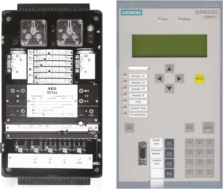There are three different types of voltage protection:
There is overvoltage when the voltage reaches a value that is far above the nominal voltage. If such an overvoltage cannot be interrupted, it can be dangerous for people and can cause damage to electrical equipment. Therefore, in some cases, voltage protection must be applied.
There is an undervoltage condition when the mains voltage is 35 to 70% below the nominal voltage. Devices and motors can malfunction if they continue to operate at too low a voltage. In the event of a short circuit in the network, the connected generators will feed the short circuit. The behavior of the generator depends on the distance from the generator to the short circuit location. The undervoltage protection safeguards the connected machines by shutting them down within a short time (approximately 0.2 seconds).
This protection is activated when the mains voltage drops 70% or more below the nominal voltage. The protection shuts off the mains voltage and does not automatically turn it back on. This is for the safety of individuals. If the power supply to an installation fails, all connected equipment comes to a halt. If the voltage were to return during automatic reactivation, all equipment in the installation would start up simultaneously. This often leads to an overload of the network and potentially damages the equipment. The unforeseen shutting down and restarting is dangerous because it can also result in physical injury to the operating personnel. The undervoltage protection prevents this uncontrolled startup.
The Netcode (Netcode, 2009) outlines the requirements that the security of a customer's installation must meet. The Netcode describes the conditions for all connected parties and also provides additional requirements for:
The boundary conditions for all connected parties are generally described with regard to selectivity (Netcode, 2009, paragraph 2.1):
Additionally, there are supplementary conditions for connections to low and medium voltage networks. In the Grid Code, medium voltage networks are referred to as high voltage networks.
If motors are installed in the network of the connected party, requirements are set for the zero-voltage protection. To prevent all machines from starting simultaneously when power is restored after a fault, it is required that zero-voltage protection is installed to ensure that no more than 10 kW of installed capacity is started simultaneously (Grid Code, 2009, paragraph 2.2).
The protections of all production units must be selective with those of the grid operator. The protection of the generator and a power electronic converter with a capacity greater than 5 kVA must, in any case, be provided on three phases with (Grid Code, 2009, paragraph 2.4):
The protection of a power electronic converter with a power rating of less than 5 kVA is at least equipped with:
The connected party must provide a grading plan regarding the protections, subject to the grid operator's assessment (Netcode, 2009, paragraph 2.3). For all connected production units, the protections must be selective relative to the protections in the grid operator's network. The producers are themselves responsible for adequate protections of the production units against faults that occur in the grid and extreme deviations in voltage and frequency.
When interconnecting grids, the grid operators, after mutual consultation, determine the security concepts to be applied (Grid Code, 2009, paragraph 2.8). The security concept of the transformer is determined by the operator of the transformer. The grid operators provide each other with the disconnection commands for disconnecting the circuit breakers on both sides of the transformer. The connections and accessories required for transmitting these commands are owned by the owner of the transformer. The settings of the protections, the type of protection, and the connection conditions are specified in the connection agreement.
The connections are protected with fuses, circuit breakers, or with protection relays and power switches. This protection is located at the connection point before the transfer point (the meter). Connections can be small consumers with an electricity connection of 3x80 A or less, or large consumers with an electricity connection of more than 3x80 A. The choice of protection is based on the classification into the 7 connection categories of the Tariff Code (Tariff Code, 2009, Appendix A).
The standard connection method for consumers up to 1 x 6A is on the low-voltage cable, auxiliary wire, or public lighting cable that are part of the network of the grid operator. The network is switched by the grid operator, for example, for public lighting. These installations are protected with a fuse or a circuit breaker in the connection box, which is located in the object to be connected.
The standard connection method for consumers up to 60 kVA is on the low-voltage cable. These installations are protected with one or more fuses or a circuit breaker in the connection box, which is located in the object to be connected. The customer can choose from several configurations for the connection, such as:
As an example, the connection of a 3x80 A small consumer has been modeled. The connection is located behind 10 meters of connection cable of the type 4x16 VGVMvKas/Al. The applied fuse is 80 A.
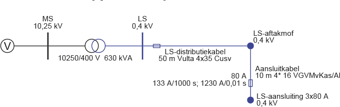The short-circuit current in the event of a short circuit directly after the meter box is 5 kA. According to the characteristic of the fuse, a short circuit at the 'LS connection' node is therefore disconnected very quickly (in less than 0.01 seconds).
The standard connection method for consumers from 60 kVA up to 0.3 MVA is at the nearest general low-voltage supply point in the network of the grid operator (medium-voltage/low-voltage substation). These installations are protected with fuses or a circuit breaker in the connection box, which is located in the object to be connected. The protection has a nominal value of 3x80 to 3x400 A.
The standard connection method for connections from 0.3 MVA up to 3 MVA is looping into the medium voltage network. The installation is located in a space belonging to the consumer. In this large consumer space, there are, among other things, two disconnectors and a circuit breaker. See also A.5.
This connection is realized by offering a transformation step and measuring at low voltage. The installation is located in a space belonging to the consumer. In this large consumer space, there are, among other things, two disconnectors, a medium voltage protection, and a power transformer. The customer must design their installation to withstand the mechanical and thermal effects that occur due to an overcurrent. There are three standard connections, depending on the connection capacity:
The A.5a connection (up to and including 630 kVA) is protected with fuses on the medium voltage side, just like the distribution transformers that feed the low voltage network. On the low voltage side of the transformer, the customer must install protection against overload and short-circuit currents in their installation. The protection must be selective with the protection of the grid operator. If the LV protection consists of a low voltage circuit breaker, it is usually set withIthermischaccording to:
[ |
6.20 |
] |
WaarinSnom, transformerthe nominal power of the transformer. The value ofULSis equal to the minimum coupled voltage on the low voltage side, being 90% of the nominal voltage. The time is set to a few seconds. The value forIis gelijk aan de minimale gekoppelde spanning aan de laagspanningszijde, zijnde 90% van de nominale spanning. De tijd is ingesteld op enkele seconden. De waarde voor Iis set to4 x Inom. The value oftlow voltage side, being 90% of the nominal voltage. The time is set to a few seconds. The value for I is set to 4 x I nom. The value of tis0 s.
The A.5b connection (up to 1000 kVA) is protected with a protection relay and a circuit breaker on the medium voltage side. The maximum current-time protection is set according to:
[ |
6.21 |
] |
Herein isfactorMSequal to 1.5 andSnom, transformerthe nominal power of the transformer. The value ofUMSis equal to the minimum coupled voltage on the medium voltage side, being 90% of the nominal voltage. The setting of the disconnection timet>can range between 0.3 and 0.9 seconds, depending on the customer's settings. The preference is for the shortest possible disconnection time to limit the effects of voltage dips in the string.
The A.5 connection (above 1000 kVA) is protected with a protection relay and a circuit breaker at the transfer point. The customer's underlying network can have many configurations. There can be multiple transformers, motors, and generators. For this reason, the protection must be established in close consultation with the customer. The protection must safeguard the DSO's medium voltage network against the risks of a fault in the customer's installation. Additionally, the protection at the transfer point must be selective with the protections in the medium voltage network and with the protections in the customer's network.
In the medium voltage transport network, rail systems with high power (more than 2 MVA) are usually fed with multiple cables. These are designed with a single fault reserve without energy interruption, so that the failure of one cable does not affect the energy supply. The most selective and fastest protection for a parallel cable can be achieved with a longitudinal differential protection. The backup protection is often a maximum current-time protection in the substation, control station, or switch station, which does not selectively disconnect the cable. The option with longitudinal differential protection as the main protection is preferred to secure a parallel cable. For this, communication between the stations is necessary. If communication cannot be established, a distance relay with energy direction protection is used.
The realization of connections of this size is always customized and is not standardly prescribed in the Tariff Code. See A.6.
Typically, medium voltage/low voltage (MV/LV) transformers up to a capacity of 630 kVA are protected on the primary side with fuses. Transformers with larger capacities are protected on the medium voltage side with an overcurrent relay in combination with a circuit breaker. On the low voltage side, transformers are protected with fuses or a circuit breaker.
When applying fuses on the medium voltage side, attention must be paid to:
For the protection of a distribution transformer up to 630 kVA, fuse links are often used for financial reasons. The values for the medium-voltage (MV) and low-voltage (LV) fuse links are calculated using the formulas below:
[ |
6.22 |
] |
[ |
6.23 |
] |
With:
UMS minimum coupled voltage on the MV side (0.9 x Unom,MS) ULS minimum coupled voltage on the LV side (0.9 x Unom,LV) factorMS 1.5 factorLS 1.1
The values for the fuses on the MV and LV sides, calculated using these formulas and rounded to standard values, are listed in Table 6.2.
Transformer (kVA) |
MV fuse (A) |
LV fuse (A) |
100 |
10 |
160 |
160 |
16 |
250 |
250 |
20 |
400 |
315 |
25 |
500 |
400 |
31.5 |
630 |
630 |
50 |
910 |
On the low-voltage side of the transformer, fuses are preferably installed for the safety of personnel in the event of a short circuit. The use of LV fuses limits the short-circuit current (cut-off current), thereby reducing the dynamic forces that occur in the LV distribution system during high short-circuit currents. The short-circuit currents on the LV side are not seen in the cut-off region by the MV fuses, and thus, in an LV distribution system not protected by LV fuses, the maximum dynamic effect would occur. A disadvantage of this construction is that MV and LV fuses cannot always be selectively chosen to work together (see figure 6.30). As a result, incorrect conclusions may be drawn after a short circuit on the LV side if the MV protection has been activated and the LV fuse has not fully blown. An initial conclusion might be that there is an internal fault in the transformer, while the actual cause is lower down. It should be noted, however, that selectivity between the MV fuses and the outgoing fields of the LV distribution system can be achieved.
The non-selectivity is accepted since it only occurs if the fault is within the isolated area of the substation. The likelihood of this happening is very small. Moreover, the potential consequences of non-selective disconnection are limited to the transformer and its connected components.

In transformers with a nominal power of 1000 kVA or more, problems can arise due to heat development from the current through the fuses. Especially in enclosed spaces, this heat development can lead to a significant temperature increase of more than 65 degrees, which can damage insulation materials. This limits the use of fuses in an enclosed space.
For the protection of network transformers larger than 630 kVA, a circuit breaker with a maximum current-time protection is used. The value forI>is calculated using formula 6.22 for the calculation of the MV fuse. Table 6.3 provides an overview of the settings forI>enIThe value for I > is calculated using formula 6.22 for the calculation of the MV fuse. Table 6.3 provides an overview of the settings for I > and I..
Transformer (kVA) |
I>(A), t>=0.5 s |
I>>(A), t>>=0 s |
750 |
65 |
1500 |
800 |
70 |
1500 |
1000 |
90 |
1500 |
1600 |
140 |
1500 |
For a transformer with a capacity greater than 630 kVA, selectivity can no longer be achieved on the medium voltage side using fuses in conjunction with the protection on the secondary side. For protection with a circuit breaker with maximum current-time protection, a setting is chosen forI>/t>equal to1.5 x Inom/0.5 sand forIFor protection with a circuit breaker with maximum current-time protection, a setting is chosen for I > /t > equal to 1.5 x I nom /0.5 s and for I/tprotection with a circuit breaker with maximum current-time protection, a setting is chosen for I > /t > equal to 1.5 x I nom /0.5 s and for I /tequal to1500 A/0 s.
Large adjustable HV/MV power supply transformers from 150, 110, and 50 kV to 25, 20, and 10 kV are typically equipped with their own transformer protections (Buchholz, temperature, and pressure), differential protection, and overcurrent time protection on both the HV and MV sides. The overcurrent time protection on the HV side serves as a backup for the differential protection and as a backup for the protection on the MV side.
The differential protection compares the currents on the primary and secondary sides with each other. For a transformer with a fixed transformation ratio, the differential protection is set as sensitively as possible. For a variable transformer, a less sensitive setting is chosen to prevent unnecessary tripping in the extreme positions of the tap changer. The differential protection can be set toId>= 0.3 x Inom; td>= 0 sThe overcurrent time protections of the power transformer can be set according to the following scheme. A time grading of 0.3 seconds is applied between the high-voltage (HV) and medium-voltage (MV) sides.
Hoogspanningszijde
First stage:I>= 1.4 x Inom; t>= 3 s
Second stage:IHigh-voltage side
First stage: I > = 1.4 x I nom ; t > = 3 s
Second stage: I= 2.5 x Inom(maximum 4500 A); tHigh-voltage side
First stage: I >= 1.4 x I nom; t >= 3 s
Second stage: I = 2.5 x I nom (maximum 4500 A); t= 1.5 s
Middenspanningszijde
First stage:I>= 1.25 x Inom; t>= 2.7 s
Second stage:I2.5 x I nom (maximum 4500 A); t = 1.5 s Medium voltage side First stage: I >= 1.25 x I nom; t >= 2.7 s Second stage: I= 2.0 x Inom(maximum 4000 A); t= 1.5 s Medium voltage side First stage: I >= 1.25 x I nom; t >= 2.7 s Second stage: I = 2.0 x I nom (maximum 4000 A); t= 1.2 s
For the transformers, the protection on the primary side signals a shutdown to the circuit breaker on the primary, secondary, and possibly tertiary sides. However, the protection on the secondary and tertiary sides only signals a shutdown to the circuit breaker on their respective sides.
When energizing an unloaded transformer, a large inrush current with a frequency equal to the second harmonic can flow for several seconds. Without additional measures, this current can lead to a shutdown by the differential protection. For this reason, a filter on the second harmonic is often applied in the static relay.
Power transformers are usually oil-filled and equipped with Buchholz protection. This protection detects gas development in the oil, which occurs due to local heating. The operation is based on hinged air-filled floats that are pushed up in the oil and fall down if the buoyant force of the oil is lost due to gas bubbles. Often, there are two floats, one of which is very sensitive to small amounts of gas and triggers a Buchholz signal. The other float responds to significant gas development and issues a shutdown command.
The pressure protection immediately shuts down the transformer if the pressure in the tap changer compartment becomes too high, for example, due to an internal short circuit.
A high operating temperature in a transformer can significantly shorten the lifespan of the existing insulation. Therefore, both the winding temperature and the oil temperature are measured. For cast resin transformers, high temperatures quickly lead to defects, with a high risk of fire. Rapid detection of a temperature increase in the object is necessary to intervene quickly.
Regulating transformers are typically equipped with their own transformer protections (Buchholz and pressure), a differential protection, and an overcurrent time protection on the unregulated feeding side. The overcurrent time protection on the unregulated side serves as a backup for the differential protection.
During a short circuit in a feeder field or regulated bus, the control of the adjustable transformer will attempt to compensate for the voltage drop by increasing the voltage. However, in this case, the control switch must be blocked to prevent regulation during an ongoing fault current. The conflict is avoided by delaying the execution (adjustment of the tap changer) by a few seconds.
The differential protection can be set toId>= 0.3 x Inomby delaying the execution (adjustment of the tap changer) by a few seconds. The differential protection can be set to I d> = 0.3 x I nomd>= 0 s. The maximum current-time protection of the uncontrolled side can be set according to the following scheme.
First stage:I>= 1.25 x Inom; t>= 2.1 s
Second stage:Iof the uncontrolled side can be set according to the following scheme. First stage: I > = 1.25 x I nom ; t > = 2.1 s Second stage: I= 2.0 x Inom(maximum 3600 A); tthe following scheme. First stage: I >= 1.25 x I nom; t >= 2.1 s Second stage: I = 2.0 x I nom (maximum 3600 A); t= 0.9 s
Many medium voltage (MV) distribution networks have a floating neutral point. The disadvantage of a floating network is that during a phase-to-ground fault, large capacitive currents can flow for an extended period. Additionally, the increased voltage on the healthy phases leads to higher voltage on cables and other components, which can cause breakdowns at weak points in the insulation at different locations (cross-country faults). Therefore, MV distribution networks can be grounded using grounding transformers or neutral grounding reactors on the secondary winding of the power transformer. This will cause a large fault current to flow during a phase-to-ground fault. It is now easier to selectively disconnect phase-to-ground faults.
A phase-to-ground fault leads to a ground current through the grounding transformer. This is measured by the maximum current-time protection. If the fault current exceeds 50 A, the MST protection issues a disconnection command. The time delay applied here is relatively long. For example, it is set to 240 seconds to ensure that possible temporary asymmetric situations, which can occur during manual network switching and last for several minutes, are not perceived as phase-to-ground faults.
In securing the network, personal safety is the top priority, followed by minimizing material damage as much as possible. During disconnection, there should be minimal disruption to the healthy parts of the network. For this reason, a lot of attention is given to the configuration of the protection and the selection of fuses.
A distribution network can be considered as a chain, composed of various cables and components, each with differing nominal currents. The protection setting is determined by the lowest nominal current of the components in the section to be protected. The current through the section can be in the normal operating range, the overload range, or the short-circuit range. Currents smaller thanInomare within the normal operating range. Currents in the range above can be caused by an overload or a short circuit. The boundary between the overload range and the short-circuit range is not always clearly defined. Distribution networks are primarily protected only against the effects of short-circuit currents. The protection must be fast enough to prevent thermal damage. To achieve this, large short-circuit currents must be quickly disconnected. As an additional benefit of the rapid disconnection, voltage dips in the healthy parts of the network last shorter, which limits the additional consequences of the disturbance.
In the event of a short circuit, only the affected section should be disconnected. This is achieved by opening the nearest circuit breaker(s). This way, only the customers connected to this section are impacted. If this is not possible, for example due to a failure of the protection system or circuit breaker, then a higher-level protection in the network must act as a backup to disconnect the short circuit.
When configuring the protections, the following points are considered:
In the MV transport network, high-capacity stations are usually fed with multiple parallel cables. These networks are typically designed with a single fault reserve without energy interruption, so the failure of one cable does not affect the electricity supply. These networks occur in the following cases:
In the Netherlands, it is customary for the operation of meshed transport networks to secure these networks with distance and differential protections. The best protection solution in medium voltage transport networks appears to be longitudinal differential protection. This provides the most selective protection and can be activated without time delay. As a backup protection, a maximum current-time protection is often used, which does not selectively disconnect the cable in the event of a short circuit. For the application of longitudinal differential protection, a communication link between both sides of the cable connection is required.
As the first alternative to longitudinal differential protection, the protection can consist of distance protection on the feeding side and directional overcurrent protection on the other side. If no communication link is possible, this configuration is preferred. As a second alternative, it is possible to protect this situation with distance protection on both sides or with maximum current-time protection on the feeding side in combination with directional overcurrent protection on the other side. For the application of distance protection, the impedance of the cable must be large enough to set it selectively. A cable length of more than 1 km is usually sufficient.
For these situations, the differential protection is set to:Id>= 0.5 x InomThe backup protection of the power supply of a substation is a maximum current-time protection, which, for example, is set according to:I>= 1.5 x Inom;t>= 2.1 sIf a large consumer of type A.6 is supplied, the backup protection is, for example, set according to:I>= 1.5 x Inom;t>= 1.5 s, to be selective with the protection at the transfer point to the large consumer. The backup protection is also equipped with a setting forI> = 1.5 s, to be selective with the protection at the transfer point to the large consumer. The backup protection is also equipped with a setting for Ifor the purpose of phase-to-phase faults in a parallel cable and forI0>for the purpose of phase-to-ground faults in a parallel cable.
The MV distribution networks are usually meshed but are operated radially by introducing a separation in each mesh (Network opening; Normal Open Point). The protection is adjusted accordingly. The feeders are typically protected with maximum current-time protections, preferably set withI>/ t>, IThe protection is adjusted accordingly. The feeders are typically protected with maximum current-time protections, preferably set with I > / t > , I/ tThe protection is adjusted accordingly. The feeders are typically protected with maximum current-time protections, preferably set with I > / t > , I / t, I0>/ t0>enI0>>/ t0>>When configuring the protections in the strings, the settings of the protections in the high-voltage network and the substation, as well as the settings of downstream strings and connections, must be taken into account.
In a medium-voltage distribution network, it is common for cables with a smaller conductor cross-section to be used at a certain distance from the substation, as these cables only need to carry a smaller load current. This is called "tapering." For each tapering, a protection is applied that is tailored to the cable type behind it. Due to the protection, the tapered network section becomes a new string.
When setting up the protections, selectivity must be taken into account. This can be achieved by staggering the settings. This means that when setting current values and disconnection times, the settings of the protections on the preceding feeding side and the subsequent side must be considered. In protection, we talk about current selectivity and time selectivity. In figure 6.32, String 1 is current selective with String 2 if the current setting of String 1 is higher than that of String 2. Furthermore, String 1 is time selective with String 2 if the time setting for String 1 is longer than that of String 2. For fuses, two patterns with a nominal current ratio greater than or equal to 1.6:1 relative to each other are absolutely selective.

Figure 6.32 illustrates the basic structure of a distribution network. A cable is connected to one of the fields of the substation, which marks the beginning of a main feeder (Feeder 1), to which network stations and customer stations are connected. A second feeder (Feeder 2) can be connected to this main feeder at a network station. This feeder has its own protection. Sometimes a third feeder is connected to this second feeder, which is also equipped with its own protection. Most network stations have a distribution transformer, equipped with protection on both the primary and secondary sides. In the low-voltage circuit, all outgoing directions are protected, usually with fuses. In a customer station, a large consumer is directly connected at the medium voltage level. The supply cable for this large consumer connection is protected with a circuit breaker.
A string is usually protected with an independent maximum current-time protection. The setpoint of the protection relay must be higher than the continuously permissible current.Inom the cable. For the setting ofI>a string, a certain margin above the nominal current rating of the cable must be taken into account. This margin is originally related to the dropout value of an electromechanical relay. To prevent an unnecessary disconnection command due to a short-term current spike, the dropout value of the protection must be greater than the nominal current rating of the cable. The dropout value is 80% of the pickup value. This provides forI>a lower limit of 1.25. A new digital relay has a pickup/dropout ratio of 1. If the grid operator allows an overload of 20% and the measurement accuracy of a current transformer is 5%, this also corresponds to a factor of 1.25 (≈ 1.2 x 1.05). This accepts the risk that the cable may be thermally overloaded. The advantage of a wider margin, however, is that temporary overloads during switching actions less frequently lead to disconnections. The final choice for the setting depends on various factors, such as the age of the cable and the ability to monitor the cable load. For the first string, the setting isI>standard equal to 1.25 times the nominal current, but if the field is monitored with remote measurement, the setting is 1.5 times the nominal current. This consequently means that currents up to 25% greater than the nominal current will not be disconnected.
The time setting is staggered from the power transformer to the last section. This means that the staggered time increases towards the power source, starting from the protection device that is furthest in the network. The settings of two consecutive protection devices must be such that the protection device closest to the fault issues a trip command to the corresponding circuit breaker. This breaker must disconnect the fault before the next protection device issues a trip command. The time setting for the first section must be below the setting of the power transformer and above the setting of the second and third sections. The last protection device has the shortest trip time. A good value for the setting oft>for the first section is, for example, 1.8 s.
When coordinating the timing of maximum current-time protections, the switching time of the circuit breaker must be taken into account. The trip time of a circuit breaker ranges between 40 and 80 ms. Currently, in practice, a margin of 0.3 s is maintained for the timing coordination.
Short circuits near the substation lead to large short-circuit currents. To limit material damage to the components and to reduce the significant voltage dip elsewhere in the network, these large short-circuit currents are quickly disconnected with a setting forITo limit material damage to the components and to reduce the significant voltage dip elsewhere in the network, these large short-circuit currents are quickly disconnected with a setting for Ientto prevent material damage to the components and to reduce the significant voltage dip elsewhere in the network, these large short-circuit currents are quickly disconnected with a setting for I and tThe current settings for the strings are staggered among themselves. The time settings are staggered with upstream and downstream protections.
For short circuits in the main line between the substation and the next protection, a third setting is sometimes required.ITime settings are staggered with upstream and downstream protections. For short circuits in the main line between the substation and the next protection, a third setting is sometimes required.and a third setting is sometimes required.en downstream protections. Voor kortsluitingen in de hoofdlijn tussen het onderstation en de volgende bescherming is soms een derde instelling vereist.possible, with the time setting usually being 0 s. Older relays do not have this setting, and relatively simple digital systems often lack this setting option as well. In newer protection systems, this option is standard.
In impedance-grounded medium voltage networks, relatively high currents occur during a phase-to-ground fault. The magnitude of this current depends on the impedance of the grounding point and the fault location. Depending on the type of cable and the length of the section, this current can be lower than the nominal current. The neutral points of the medium voltage networks are grounded in the substation with grounding transformers or neutral point reactors. The neutral points are monitored by an MST protection system that measures the current to ground. If the current exceeds, for example, 50 A, damage can occur to the neutral point due to overload if the phase-to-ground fault is not isolated in the section. Therefore, the first sections are protected with, for example, aI0>of 50 A and a time setting oft0>of 60 seconds. This long duration (1 minute) is chosen because during the change of network connections during single-pole switching, an asymmetrical current may flow.
In addition to theI0>is for the first strand aI0>>set with a value below the setting forI0>of the supplying HV transformer (500 A / 2.7 s). The time setting is equal to the phase settingt>.
In a substation, a maximum of 3 strings can be connected 'in series' due to selectivity. In new construction projects, it is preferred not to connect a third string anymore. The selectivity is determined by the protection settings from the HV side of the supply transformer to the protection settings of the MV connections of distribution transformers and A.5 connections.
In a control station or switchgear station, only 3 strings can be connected in series if the feeding cables are protected with differential protections. If not, the maximum number of strings from a control station or switchgear station is limited to 2.
Table 6.4 shows a possible scheme for the protection of an MV distribution network, from the supply transformer to the third string. Here, the values ofITable 6.4 shows a possible scheme for the protection of an MV distribution network, from the supply transformer to the third string. Here, the values of Ifor the transformer are maximized at 4500 A, based on a voltage level of 10 kV. The protections for the connections are described in paragraph 6.2 and for the MV/LV transformers in paragraph 6.3.1.
Locatie |
I> |
t> (s) |
Iare described in paragraph 6.2 and for the MV/LV transformers in paragraph 6.3.1. Table 6.4 Settings for the protection from the power transformer Location I > t > (s) I |
t (s) |
I0> |
t0> (s) |
I0>> |
t0>> (s) |
Transformer HV side |
1.4 x Inom |
3.0 |
2.5 x Inom, max 4500 A (at 10 kV) |
1.5 |
700 A |
3.0 |
||
Transformer MV side |
1.25 x Inom |
2.7 |
2.0 x Inom, max 4000 A (at 10 kV) |
1.2 |
500 A |
2.7 |
||
First string |
1.25 or 1.5 x Inom |
1.8 |
1900 A |
0.6 |
50 A |
60 |
300 A |
1.8 |
Second string |
1.25 x Inom |
1.5 |
1700 A |
0.3 |
250 A |
1.5 |
||
Third string |
1.25 x Inom |
1.2 |
1500 A |
0.0 |
200 A |
1.2 |
These settings have been entered for the protections of the example network in figure 6.32. The protections for the distribution transformer and a low-voltage string have also been entered in the network. Figure 6.33 graphically displays the settings of all protections. All currents in the graph are referenced to the 10 kV voltage level.

In the case that the strings are fed from a control station or switching station, where the feeding cables are protected with differential protections, a maximum of 3 strings can be connected, and the protection settings scheme is as indicated in Table 6.5. In this table, n is the number of feeding parallel cables between the substation and the control or switching station. If the feeding cables are not protected with differential protections, the third string is omitted.
Locatie |
I> |
t> (s) |
ILocation I > t > (s) I |
tTable 6.5 Setting for the protection from a control or switching station Location I > t > (s) I (s) |
I0> |
t0> (s) |
I0>> |
t0>> (s) |
Transformer HV side |
1.4 x Inom |
3.0 |
2.5 x Inom, |
1.5 |
700 A |
3.0 |
||
Transformer MV side |
1.25 x Inom |
2.7 |
2.0 x Inom, |
1.2 |
500 A |
2.7 |
||
Parallel cable |
1.5 x Inom |
1.8 |
3600 / n |
0.9 |
400/n |
1.8 |
||
First strand |
1.25 or 1.5 x Inom |
1.5 |
1900 A |
0.6 |
50 A |
60 |
300 A |
1.8 |
Second strand |
1.25 x Inom |
1.2 |
1700 A |
0.3 |
250 A |
1.5 |
||
Third strand |
1.25 x Inom |
1.2 |
1500 A |
0.0 |
200 A |
1.2 |
The tables provide an indication of a setting plan for protections in medium voltage networks. In practice, deviations from this plan often occur due to historical or operational philosophy reasons. Figure 6.34 illustrates the protection of a direction in the medium voltage distribution network using independent maximum current-time relays. The maximum current in normal operation is approximately 180 A. The nominal current of the cables in the 'first strand' is 310 A. The 'first strand' is fed from the substation via a choke coil, which is protected by an OMT relay (see paragraph 6.1.5) that issues a trip command at 1.8 s if the current exceeds 465 A. If the short-circuit current exceeds 1900 A, a trip command is issued at 0.6 s.
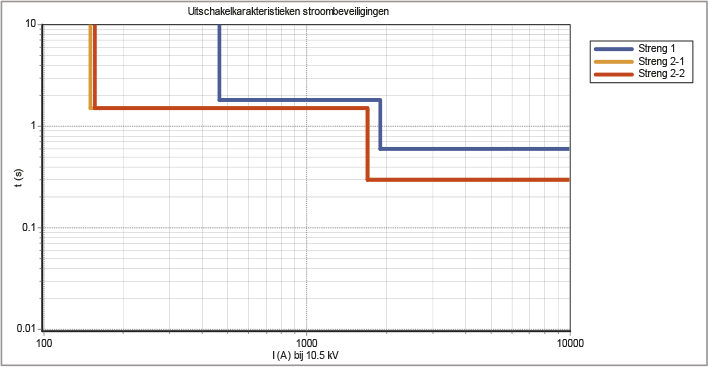Two 'secondary strings' are connected to the first string with a nominal current of 120 A and 125 A, respectively. Both 'secondary strings' are protected by an OMT relay. The protection of String 2-1 issues a trip command at 1.5 s if the current exceeds 150 A. If the current exceeds 1700 A, the relay issues a trip command at 0.3 s. The relay protecting the second branch has a setting forI>of 156 A. Figure 6.35 shows the characteristics of the three mentioned protections.
It is clearly visible that the characteristics of the protections for Branch 2-1 and Branch 2-2 are below the characteristic of the power supply. In the middle region of the characteristic, the margin is 0.3 s. This setting is selective. Since the protections for Branch 2-1 and Branch 2-2 are not in series (they are both 'second branches'), they do not need a margin relative to each other.
Faults near the substation have the highest short-circuit current and are disconnected after 0.6 seconds using the settings from Table 6.4 and Table 6.5. These faults cause damage to components and a voltage dip for all customers connected to the substation installation during the 0.6 seconds. To mitigate these effects, aITable 6.5. These faults cause damage to components and a voltage dip for all customers connected to the substation installation during the 0.6 seconds. To mitigate these effects, a Iset to immediately disconnect faults near the substation with large short-circuit currents. Should the margin toIthe substation installation during the 0.6 seconds. To mitigate these effects, a relay is set to immediately disconnect faults near the substation with large short-circuit currents. Should the margin to relaybe too small, creating a risk that the setting also responds to faults in the second branches, then the setting ofIlarge short-circuit currents. If the margin to the relay is too small, creating a risk that the setting also responds to faults in the second branches, then the setting of Ibe omitted. In that case, selectivity is chosen instead of preventing large voltage dips.
The distribution network is laid out in rings as much as possible, so that in the event of a fault, after isolating the faulty section, it can be switched to restore the supply. In situations such as with a radial feeder, this is not possible and the disconnected connections must be powered via a generator. In a ring structure, the network is operated radially, but the shields of the cables are interconnected in the ring. This is not possible with a radial feeder. In a grounded distribution network, in the event of a phase-to-ground fault, the ground fault current can flow back to the grounded neutral point via the cable shields. In a ring structure, the return path is meshed, and the ground fault current can flow back through multiple paths. With a radial feeder, only one return path is available.
In the event of a phase-to-ground fault, the voltage of the cable's shield increases relative to the ground. In the substations, the shields of the medium voltage (MV) cables can be connected to the grounding system of the low voltage (LV) network. If that is the case, a voltage increase on the shield of the MV cable results in an increased touch voltage for the users in the LV network. Because there is only one return path for the ground fault current in a radial feeder, the return impedance is higher, leading to a greater potential increase than in a phase-to-ground fault in the ring structure. The level of touch voltage and the associated disconnection time are specified in NEN 1041 and further described in chapter 5. In practice, it has been found that when using certain types of cables, such as 3*240 AL XLPE with 70 mm2ground screen, the touch voltage can become higher than allowed. This situation is depicted in figure 6.36.

In this example network, grounding of 0.2 Ω is applied at the substation and grounding of 2 Ω at each network station. If the phase-to-ground fault occurs in the ring at the location of 'Network Station B3', the potential rise on the cable screen is 270 V. For a phase-to-ground fault at the location of 'Network Station Branch', the potential rise is 416 V. According to the standard, the fault must be disconnected within 0.3 seconds at this voltage. Therefore, the branch is equipped with a circuit breaker and protection, of whicht0.3 seconds is the maximum disconnection time.is not set tot>,but standard at 0.3 s. The a-selectivity that arises with any connections is accepted because safety takes precedence over selectivity.
Many medium-voltage networks have a floating neutral point. In these networks, a phase-to-ground fault does not need to be immediately disconnected because the fault current is not large. In floating networks, the fault current during a short circuit between a phase and ground is mainly determined by the total capacitance of all connected cables. During this short circuit, the voltage on the shorted phase is zero, and the voltage on the two healthy phases relative to ground is equal to the line-to-line voltage. This increased voltage can lead to a breakdown elsewhere in the network, especially in cables ('cross-country'). As a result, the phase-to-ground fault can evolve into a complex two-phase-to-ground fault. To prevent this undesirable situation of line-to-line voltage on the phases of the cables from persisting too long, a phase-to-ground fault is disconnected after some time. Additionally, the capacitive current can cause thermal overload of the cable shield. In that case, the design of the distribution network must include an impedance-grounded network, allowing the fault to be detected and disconnected. A phase-to-ground fault can be detected by measuring the system voltage or by measuring the three phase currents.
Detection using the system voltage is carried out by measuring the three individual phase voltages and summing them vectorially. The primary windings of three voltage transformers have a common grounded neutral point. The secondary windings are connected in an open delta configuration. In normal operating conditions, the vector sum of the three phase voltages is zero. In the event of a phase-to-ground fault, the sum of the phase voltages is significant, making this configuration highly sensitive to phase-to-ground faults.
The phase-to-ground fault can also be detected by measuring the three currents and summing them vectorially. This is done in a Holmgreen circuit, where the secondary windings of the three current transformers are connected in parallel and connected to the ground fault relay. In normal operating conditions, the vector sum of the currents is equal to zero. During a phase-to-ground fault, the current from the faulty phase leaks away through the ground, causing the sum of the currents to no longer be zero. This measurement only responds to short circuits with ground contact, allowing the setting to be chosen independently of the nominal current and kept relatively small. In practice, this sensitivity is not greater than 10 to 20% of the nominal current.
The availability of both the protection system and the circuit breaker is not 100%. This means there is a chance that they may not function or may trip incorrectly. By deploying multiple protection systems, the availability of protection for tripping can be increased. However, this also increases the likelihood of an incorrect trip. In the event of a short circuit, ideally, only the affected network section should be disconnected. This ensures that as few customers as possible are impacted. If this does not happen due to the failure of the protection system or circuit breaker, another protection system must trip.
A good solution for the potential malfunction of a protection system can be found by constructing the protection system with a primary protection and a backup protection. The backup protection is preferably implemented using protections that are installed elsewhere for other primary objects. An alternative must also be considered for a failing circuit breaker. Additional equipment (such as a switch reserve protection) can be installed to address the failure of the circuit breaker. The likelihood that both the primary protection and the backup protection will fail simultaneously is very small. This is not taken into account in the current network design.
The backup for the third section is provided by the protection of the second section. The backup for the second section is provided by the protection of the first section. In the first section of an MV distribution network, there are two MST protections that both control the same circuit breaker. There is often no backup from an upstream protection. Therefore, in that case, a switch reserve protection (SRB) is needed to still disconnect the fault if an outgoing circuit breaker fails. If an outgoing circuit breaker does not disconnect, the SRB protection issues a disconnection command to all circuit breakers connected to the bus.
Voltage protection and frequency protection are essentially intended to protect the connected electrical equipment. The power grid that supplies this equipment will generally have no issue feeding an overloaded transformer or motor, even at a low voltage. If these abnormal operating conditions are allowed to persist, they will eventually result in a short circuit. The connected device will then be defective; large currents will flow through the distribution network, which can ultimately lead to overheating of cables, transformers, and switches, causing them to fail as well. The protection at the transfer point must safeguard against overloading the grid of the network operator. Thus, protection is implemented to prevent damage to electrical equipment, to limit damage at the fault location itself, and to prevent damage to other parts of the network.
Undervoltage protection: when the network voltage drops, the current increases at constant power, which can lead to overloading. This is mainly caused by motors that enter an unfavorable operating range at a lower supply voltage. Initially, the motors will draw more and more current due to the reduced voltage in order to continue delivering the desired driving torque. Subsequently, they will overheat and burn out.
Overvoltage protection: when the mains voltage increases, the current decreases while the power remains constant. In motors and transformers, the iron loss will increase. Excessive mains voltage can cause connected equipment to become too hot. Additionally, insulation defects may occur.
Frequency protection: a frequency that is too low or too high causes transformers on the secondary side to no longer have the correct voltage. Additionally, an incorrect frequency disrupts the behavior of motors.
Generators in the medium voltage network contribute to the short-circuit current during a short circuit. For the proper functioning of the protection of the lines, generators must immediately disconnect in the event of a short circuit in the medium voltage network. Due to safety around the disturbed network section, decentralized generators are not allowed to reconnect to the de-energized network. The circuit breakers are equipped with additional protection for this purpose. Additionally, decentralized generators are not allowed to feed the network in island mode. The island-operated subnet and the main network are not synchronized. Synchronization equipment is needed to connect them. The Netcode (Netcode, 2009) describes the requirements that users with decentralized generation must meet.
With the increase in the amount and concentration of decentralized generation, several security issues in the network can arise, such as 'unintentional islanding,' 'incorrect disconnection,' and 'blinding of protection' (Coster, 2007). In particular, blinding of protection and incorrect disconnection are seen as serious threats.
The likelihood of unintentionally entering island mode is small. The decentralized generation units are not equipped with automatic frequency/power regulation. As a result, they cannot manage the imbalance between supply and demand, which is necessary in island mode. All production units will disconnect in the event of a significant frequency deviation using their frequency protections. Decentralized generation units are specifically equipped with current and voltage protections to prevent the island mode condition.
The current and voltage protections of the decentralized generation units are set in such a way that they quickly disconnect the generation units in the event of an excessive short-circuit current contribution or a significant voltage dip. This disconnection of generation units can lead to large, sudden, and undesirable changes in power flows.
In the event of a short circuit in one of the outgoing feeders, all decentralized generators in the medium voltage (MV) network will contribute to the short-circuit current. If the short-circuit current contribution exceeds the trip setting of the maximum current-time protection of the feeders, the healthy feeder with the decentralized generator will be disconnected. The likelihood of this increases as the decentralized generator is located closer to the substation, control station, or switching station (see figure 6.37).
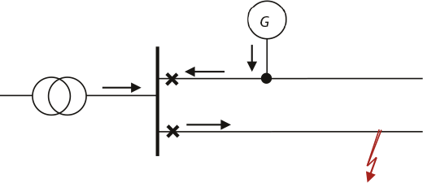The solution to this problem is simple by using a maximum current-time protection with energy direction in the line with the decentralized generator. Moreover, if the generator is disconnected earlier by the undervoltage protection or frequency protection than by the current protection in the line, this problem will not occur.
If a short circuit occurs in a section where decentralized generation is present, the generators will contribute to the short-circuit current, and the contribution from the feeding grid to the short-circuit current will decrease proportionally. Figure 6.38 provides an overview of the situation.

Due to the decrease in the contribution from the feeding grid to the short-circuit current, the protection at the beginning of the string measures a smaller short-circuit current than that at the fault location. As a result, it is possible that this protection does not activate. The short-circuit contribution from the feed decreases as the short-circuit capacity of the generator increases in relation to the short-circuit capacity of the feed. Additionally, the short-circuit contribution from the feed decreases as the generator is located closer to the feed. This is determined by the ratios of the impedances in the short-circuit current calculation (Coster, 2007). The calculations in Figures 6.39 and 6.40 were performed for a medium-voltage string, which is fed via a 50 MVA transformer. The string is 20 km long. The calculated short-circuit current is 1758 A.

If a 2 MVA generator is connected at a distance of 5 km from the power supply, the short-circuit contribution from the power supply decreases by 122 A to 1636 A.

The cause lies in the parallel connection of the impedances of the feeding section and the generator. This effect is strongest in relatively weak networks with a lot of decentralized generation. If the protection measures a short-circuit current that is smaller than the trip value, the short circuit will not be disconnected initially. If the short-circuit current contribution from the generator is greater than the trip value of the generator protection, it will disconnect first, after which the short-circuit current contribution from the feeding network will increase again and the protection will eventually trip. It is not a desirable situation for the protection of the line to depend on whether or not the decentralized generators disconnect. In this situation, the decentralized generators should be immediately disconnected by an undervoltage protection in the event of a short circuit in the network. In practice, however, the chance of blinding the protection in Dutch networks is very small (Coster, 2010).
The settings for the protection of decentralized generating units depend on the unit size and the voltage level to which they are connected. Table 6.6 provides an overview of possible protection settings, derived from the System Code for generating units connected at low and medium voltage levels.
Opwekeenheid |
Undervoltage protection |
Overvoltage protection |
Maximum current-time protection |
Frequency protection |
LS: Generator or power electronic converter |
U<= 80% |
U>= 106% |
I>= 1.25 x Inom |
F<>= 2 Hz |
LS: Generator or power electronic converter |
U<= 80% |
U>= 106% |
I>= 1.25 x Inom |
FU = 70% t U<< = 0.2 s U > = 106% t U> = 2 s I > = 1.25 x I nom t I> = 0.2 s F= 2 Hz |
MS: Generator or power electronic converter |
U<= 80% |
U>= 106% |
I>= 1.25 x Inom |
F= 1.25 x I nom t I> = 0.2 s I = 1000 A t I>> = 0.0 s I 0> = 30 A t I0> = 0.0 s F= 2 Hz |
For generating units connected at medium voltage level, the System Code (System Code, 2009, Appendix 3) provides an overview of abnormal operating conditions in which disconnection from the grid is not allowed. This pertains to voltages between 80 and 105% of the nominal value and frequencies between 48 and 51 Hz.
The areas a, b, c, and d are distinguished, for which the following applies:
a) deliver nominal power for an unlimited time
b) deliver nominal power for 15 minutes; then remain parallel to the grid for 5 minutes
c) deliver 90% of the nominal power for 10 seconds; then remain parallel to the grid for 5 minutes
d) remain parallel to the grid for 5 minutes

A third, more theoretical situation occurs in an MV feeder where decentralized generation supplies a large load that is further down the same feeder. If this load, for example due to agreements with the decentralized producer, only draws power during the generator's production, this current is not detected by the protection in the substation. As a result, it is possible for the network section between the producer and the consumer to become overloaded without being noticed.
Figure 6.42 shows the situation where the connection between substations DCO and MV2 is overloaded by a current of 125% of the nominal value, while the protection in the substation sees a current of 89% of the nominal value and with a setting of1.25 x Inomwill not disconnect.
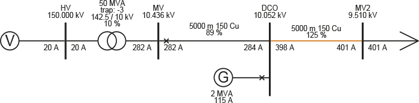The design of protection and the subsequent setting of protection relays is a time-consuming task where experience plays a significant role. For that reason, companies themselves establish guidelines for standard situations. However, it is inevitable that calculations must be made to arrive at the correct settings. In the past, this was often manual work, where each situation was individually calculated and assessed. Some companies have now developed their own software for this (Rombouts, 1998).
Additionally, there is generally available software that can be used to test the settings of protections. This software performs short-circuit calculations for faults at nodes and in cables of the network. In this process, the impedance at the fault location can be varied. The software reports the behavior of the protections and tests the selectivity.
Security functions are gradually becoming more integrated into substation automation. The goal is to eventually unify the system of separate functional security units into a single, simple, and transparent security system. This development is driven by the issues surrounding the maintenance and replacement of security and control equipment in a substation. After the security equipment reaches the end of its technical lifespan, it can sometimes be difficult to obtain replacement components. Comparable devices from alternative suppliers do not always communicate in the desired manner with the existing structure. Additionally, there is a need for new functionalities that are difficult to integrate into the existing substation automation.
There is also an increasing need to measure more than has been customary in the medium-voltage networks and to control locally based on measurement data. By applying ICT technology and fiber optic communication, decision-making functions can be integrated into one system with an open communication protocol, while the actual measurement of current and voltage remains handled by simple measuring equipment in the substation fields. A modern system, which is already being applied on a modest scale in various places in the Netherlands, combines functions for protection, fault location, power quality, monitoring, and control. The goal of this system is to make protection and control in a substation simple and inexpensive (Riet, 2005). More on this subject can be found in paragraph 14.8 and in chapter 15 on intelligent networks.
Phase to Phase is onderdeel van Technolution. © 2009-2021